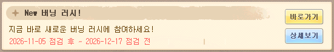

테일즈위버 버닝 러시 캐릭터 등록 방법 혜택 12월 17일까지
테일즈위버 New 버닝 러시는 캐릭터를 등록해야 혜택이 붙고, 등록은 12월 17일 점검 전까지 할 수 있습니다. 오랜만에 돌아오신 분들도, 이제 막 시작하시는 분들도 «등록부터 해야 하나?» 하고 먼저 궁금해하실 거 같은데요. 등록하는 방법부터 받게 되는 혜택까지 순서대로 풀어 보겠습니다.
이벤트 기간은 11월 5일 점검 후부터 12월 17일 점검 전까지입니다. 11월 5일(목) 정기 점검이 오전 8시부터 9시 10분까지였고, 이 패치와 함께 New 버닝 러시가 시작됐어요.
테일즈위버 버닝 러시 캐릭터 등록 방법
캐릭터 등록은 게임 화면 오른쪽 이벤트 리스트의 [바로가기] 버튼으로 합니다. 이벤트 리스트에서 New 버닝 러시를 찾아 [바로가기]를 눌러 주시고, 이벤트에 참여할 캐릭터를 등록해 주시면 되겠습니다.

이벤트 리스트에 뜨는 New 버닝 러시 줄이에요
이미지 출처: 테일즈위버 공식 · 네이버 본문엔 받아서 재업로드 권장
이벤트 리스트에는 [바로가기] 옆에 [상세보기] 버튼도 함께 있으니, 자세한 안내가 궁금하신 분들은 그쪽도 눌러 보시면 좋을 거 같아요. 새로 만든 캐릭터도, 이미 키우고 있던 캐릭터도 모두 등록할 수 있습니다. 등록하는 순간 성장 지원 버프가 지급되는데요. 버프는 등록 시에 지급되는 것이라 등록이 곧 첫 순서라고 보시면 됩니다. 어떤 버프인지는 아래에서 이어서 말씀드릴게요.
버닝 러시 등록 대상과 1회 제한
참여 대상은 넥슨OTP에 가입된 명의당 넥슨ID 1개 안의 캐릭터입니다. 등록하시기 전에 아래 세 가지는 꼭 알아두시면 좋을 거 같아요.
- 횟수 — 캐릭터당 1회만 참여할 수 있습니다. 예전 버닝 러시에 참여했던 캐릭터도 New 버닝 러시에는 다시 참여할 수 있어요.
- 변경 불가 — 한 번 등록한 캐릭터는 변경할 수 없습니다.
- 삭제 주의 — 등록한 캐릭터를 삭제하면 더 이상 New 버닝 러시에 참여할 수 없습니다.
바꿀 수 없다는 점 때문에 어느 캐릭터로 할지가 가장 큰 고민이 아닐까 싶네요. 등록할 캐릭터를 고르는 창에서 한 번 더 확인하고 누르시는 게 좋겠습니다.
등록 전에 캐릭터를 한 번 더 확인해 주세요
저라면 〔새로 만든 캐릭터 / 키우던 캐릭터〕로 등록할 거 같아요.
성장 지원 버프와 정착 지원 보급 혜택
등록하면 경험치 획득량 +1000%, 이동속도 +10의 성장 지원 버프가 붙습니다.
- 등록 시 지급되고 30일 동안 이용할 수 있습니다.
- Lv.1부터 Lv.309까지 유지되고, Lv.310이 되면 풀립니다. 이벤트가 끝나는 때에도 함께 풀립니다.
매일 챙기는 혜택은 NEW 정착 지원 보급이 따로 있는데요. 정착 지원 보급은 매일 접속만 해도 3,000 ELSO를 줍니다. 정착 지원 이벤트의 [바로가기] 버튼을 누르면 정착 지원 버프와 보상 아이템을 받을 수 있어요.
- 정착 지원 버프는 2시간 동안 공격 피해량(일반) +10%, 피해 감소(일반) +10%입니다.
- 명의당 하루 한 번 받을 수 있고, 매일 오전 0시에 초기화됩니다.
성장 지원 버프는 한 번 등록하고 나면 끝이고, 정착 지원 보급은 날마다 소소하게 챙기는 쪽이라고 보시면 되겠습니다.
버닝 러시 단계별 보상 정리
버닝 러시 진행 상황은 게임 화면 오른쪽 젤리삐 가이드 버튼에서 확인할 수 있고, 보상은 미션 단계와 진행도에 따라 나뉩니다. 주요 보상만 표로 모았습니다.
| 구분 | 보상 |
|---|---|
| 7단계 | [E] 眞-인퍼널 무기 상자 (30일), [E] 眞-인퍼널 방어구 상자 (30일) |
| 12단계 | [E] 眞-아퀼루스 무기 상자 (30일), [E] 眞-아퀼루스 방어구 상자 (30일) |
| 14단계 | [E] 인퍼널 장비 무기한 교환 쿠폰 8개, 10000 ELSO |
| 진행도 70% | [E] 라이도 심볼릭 커프 강화권, [E] 신조의 성물 강화권 |
| 진행도 100% | [E] 명예의 서 (Burning Rush Master), [E] 머큐리얼 케이브 코어 상자, [E] 어비스 코어 상자 |
표 출처: 테일즈위버 공식 이벤트 공지 · 주요 보상만 발췌
7단계는 인퍼널, 12단계는 아퀼루스 상자라서 서로 다른 장비 세트입니다. 헷갈리지 않게 단계를 눈여겨보시면 좋을 거 같아요. 두 상자에는 모두 30일이라는 표기가 붙어 있는 반면, 14단계의 인퍼널 장비 교환 쿠폰은 무기한 교환이라는 점이 다르고, 여기에 10000 ELSO가 함께 들어 있습니다.
진행도 쪽은 70%를 채우면 커프 강화권과 성물 강화권, 100%를 채우면 명예의 서와 코어 상자 두 종류를 받게 됩니다. 단계와 진행도가 어디까지 왔는지는 젤리삐 가이드 화면을 틈틈이 열어 확인해 보시면 되겠습니다.
단계와 진행도를 한눈에 볼 수 있는 화면이에요
복귀·신규 이용자는 어떤 캐릭터로 등록할까
등록할 캐릭터는 새로 만든 캐릭터든 키우던 캐릭터든 상관없지만, 성장 지원 버프가 Lv.309까지 이어지기 때문에 레벨이 낮을수록 버프를 쓸 구간이 길게 남습니다. 상황별로 이렇게 나눠 보면 고르기가 편할 거 같습니다.
- 처음 시작하신다면 새로 만든 캐릭터로 등록하면 Lv.1부터 경험치 +1000%를 받으면서 달릴 수 있습니다. 버프 구간을 통째로 쓰는 쪽이라 가장 고르기 쉬운 선택입니다.
- 복귀하신다면 예전에 키우던 캐릭터도 등록할 수 있으니, 원래 쓰던 캐릭터를 그대로 고르셔도 됩니다.
- 만들어 둔 캐릭터가 여럿이라면 한 번 등록하면 바꿀 수 없으니, 지금 가장 키우고 싶은 캐릭터 하나만 정해서 등록하시는 쪽을 권합니다.
- 매일 접속하신다면 정착 지원 보급은 하루 한 번이고 매일 오전 0시에 초기화되니, 접속하신 김에 [바로가기]부터 눌러 3,000 ELSO와 2시간짜리 버프를 챙기시면 되겠습니다.
성장 지원 버프는 등록한 시점부터 30일 동안 이용할 수 있는데요. 다만 12월 17일(목) 점검에서 이벤트가 끝나면 버프도 함께 풀리기 때문에, 마감 직전에 등록하면 30일을 다 쓰지 못할 수 있습니다. 그래서 저라면 플레이할 시간을 낼 수 있는 때에 맞춰 너무 늦지 않게 등록하는 쪽을 택할 거 같습니다.
자주 묻는 질문
Q. 젤리삐 가이드를 이미 다 끝낸 캐릭터는 보상을 못 받나요?
이벤트 시작 전에 젤리삐 가이드를 모두 완료한 캐릭터라면 버닝 러시 보상을 즉시 받을 수 있습니다. 등록한 뒤에 따로 기다리실 필요는 없다고 보시면 되겠습니다.
Q. 12월 17일이 지나면 미션은 어떻게 되나요?
12월 17일(목) 점검 후에는 New 버닝 러시 미션이 사라집니다. 등록도 그날 점검 전까지라서, 미션을 진행하실 분들은 그 전에 챙겨 두시는 게 좋겠어요.
복귀하시거나 새로 시작하시는 분들께는 등록 한 번으로 경험치 버프를 받을 수 있는 좋은 기회라고 생각합니다. 어떤 캐릭터로 시작할지만 정해지면 이벤트 리스트에서 [바로가기] 한 번이면 되니, 마감 전에 챙겨 보세요. 등록한 뒤에는 정착 지원 보급도 매일 잊지 말고 눌러 주시면 소소하게 쏠쏠한 보너스가 됩니다.
✔ 테일즈위버 같이 보기 좋은 내용
· 테일즈위버 모바일 FGT 참가자 모집 신청방법 일정 총정리
참고한 곳
· 테일즈위버 공식 사이트